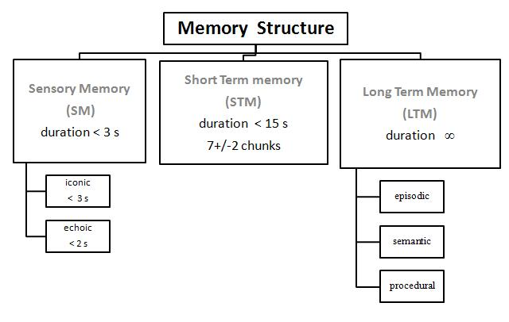
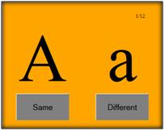
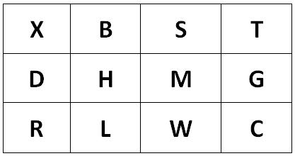

What is short-term memory?
Short-term memory (STM) is the capability of holding information in mind in active, readily available state for a short period of time. The duration of short-term memory is in the order of seconds.
Duration of short-term memory
The contents in STM spontaneously decay over time. Thus to retain information for longer time, the information must be periodically repeated or rehearsed.
Capacity of Short Term Memory
Experiments have shown that STM has a limited capacity to remember 7+/-2 chunks of information at a time. This limit is called memory span. In a memory span test, the experimenter presents lists of items (e.g. digits or words) of increasing length. An individual span is determined as the longest list length that he or she can recall in the given order for at least half of the times.
Chunking
Chunking is a process by which you can expand your ability to remember things in STM. Chunking means organizing information into meaningful groups. Average person can retain only about four different chunks(units) in short-term memory at a time. Effective chunking can greatly increase a persons recall capacity. For example, in recalling a phone number, the person could chunk the digits into three groups: first, the area code (such as 215), then a three-digit chunk (123) and lastly a four-digit chunk (4567). This method of remembering phone numbers is far more effective than attempting to remember a string of 10 digits.
In an experiment it was observed that out of 10 letters presented a person could recall 7 letters easily. Similarly out of 10 words presented a person could recall 7 words. This is because the words were stored in STM in chunks of letters and not individual letters. Thus regardless of the content, chunking improves the amount of information recalled. Miller offered an explanation to how items are coded in STM using chunking theory.

Incoming information is encoded as chunks in STM by referencing LTM. Mostly STM operates by auditory coding of input stimuli. We hold information in STM by auditory rehearsal.
After performing this experiment
1.You will find evidence of information being stored in STM by means of visual coding of input stimuli.
(Posner and his associates [Posner,1969] found that , at least part of the time , information is coded visually in STM.)
In the first part of the experiment you will be shown two alphabets side by side (see the figure below). You will be asked to indicate by pressing a button whether the two alphabets are Same or Different. Your reaction time for pressing the button will be recorded.
Following table shows the correct responses
| Condition | Examples | Correct Response |
| Visual and name match | A A | Same |
| Name match | A a | Same |
| Visual and name mismatch | A T | Different |
| AVisual and name mismatch | A t | Different |
Observations to be noted
You will observe that the reaction time for the second condition ( A a ) will be more than for the first ( A A ). This is because identical letters (A A) are judged by their visual characteristics while letters having the same name but different shape (A a ) are compared by their verbal characteristics. Thus the A A match was made on the basis of physical (visual code) and so the response time is less. Thus coding of information in STM is first visual and then based on name.
In case when alphabets are shown after a time delay of few seconds the name coding takes over the visual coding and hence the difference in response time for A A and A a is very less.
The experiment has three sub parts. All of them can be tried out.
- (a)Character Set
(b)Color Set
(c)Image Set
Please follow following procedure
- 1.Click on the SIMULATOR tab to proceed for the experiment.
2.You will see a button which will direct you to the experiment page.
3.Read instructions given carefully for each experiment and perform all 3 parts in sequence.
4.A graph will be displayed after each sub-experiment. You are expected to capture this graph and save it on to your local drive.
5.Try to analyze the graphs and see if the results about STM prove to be valid in your case.

To go to experiment:Click Here

Q1.What long does any information remains in Short Term Memory?
Q2.What is the memory span of STM for an average individual?
Q3.How will you increase the memory span of your STM?
Q4.In which different ways is information coded STM?
Q5.What hypothesis has been validated in these experiments?
Q1.Device 3 experiments to prove existence of iconic, echoic and haptic sensory store? You can search the web.

Q2.Refer to the above matrix of alphabets. Show this matrix to a set of respondents for around 10 seconds only.
Then ask them to recall and draw the same matrix on a paper.
Now for another set of respondents do not show them the matrix. Instead read the letters to them row-wise in HIGH, MID and LOW tone respectively for row1, row2, row3.
Find out the average percentage and number of (a) characters recognized (b) locations recognized for the both set of respondents.
Analyze your results. Can you infer anything from this?

- http://thelistcafe.com/10-fascinating-feats-of-human-memory
- http://www.human-memory.net/
- http://www.cindy.sifonis.com/Classes/Cog316/cogline/sensory%20store%20and%20STM.pdf
- http://www.useit.com/alertbox/short-term-memory.html
Books: